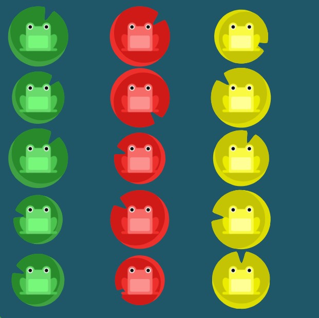

FLEXBOX FROGGY
Para jugar ingresa en flexboxfroggy.com
justify content
Usando la propiedad justify-content, la cual alinea elementos horizontalmente y acepta los siguientes valores:
flex-start: Alinea elementos al lado izquierdo del contenedor.
flex-end: Alinea elementos al lado derecho del contenedor.
center: Alinea elementos en el centro del contenedor.
space-between: Muestra elementos con la misma distancia entre ellos.
space-around: Muestra elementos con la misma separación alrededor de ellos.
flex-end

justify-content: flex-end
Center

justify-content: center
Space Around
justify-content:space-around
space between
justify-content:space-between
align-items
Ahora usa align-items para ayudar a las ranas a llegar al fondo del estanque. Esta propiedad CSS alinea elementos verticalmente y acepta los siguientes valores:
flex-start: Alinea elementos a la parte superior del contenedor.
flex-end: Alinea elementos a la parte inferior del contenedor.
center: Alinea elementos en el centro (verticalmente hablando) del contenedor.
baseline: Muestra elementos en la línea base del contenedor
stretch: Elementos se estiran para ajustarse al contenedor.
flex-end
align-items:flex-end;
Combinando justify-content y align-items.
align-items: center
justify-content:center
justify-content y align-items.

justify-content:space-around
align-items:flex-end
Flex direction
Esta propiedad CSS define la dirección de los elementos en el contenedor, y acepta los siguientes valores:
row: Elementos son colocados en la misma dirección del texto.
row-reverse: Elementos son colocados en la dirección opuesta al texto.
column: Elementos se colocan de arriba hacia abajo.
column-reverse: Elementos se colocan de abajo hacia arriba.
row-reverse
flex-direction:row-reverse
column
flex-direction:column
Combinando flex-direction y justify-content
flex-direction:row-reverse;
justify-content:flex-end;
Combinando flex-direction y justify-content.
flex-direction:column
justify-content:flex-end
Combinando flex-direction y justify-content.

flex-direction:column-reverse
justify-content:space-between
Combinando flex-direction, justify-content, y align-items.
order
A veces, invertir el orden de una fila o columna de un contenedor no es suficiente. En esos casos, nosotros podemos aplicar la propiedad order a elementos individuales. Por defecto, los elementos tienen un valor 0, pero nosotros podemos usar esta propiedad para establecerlo a un número entero positivo o negativo.
Order
order:3

order:-1;
align-self
Otra propiedad que puedes aplicar a elementos individuales es align-self. Esta propiedad acepta los mismos valores de align-items y sus valores son usados para un elemento específico
align-self
align-self:flex-end
Combinar order con align-self
order:1;
align-self:flex-end
flex-wrap
¡Oh, no! Todas las ranas están apretadas en una sola fila de hojas de lirio. Manos a la obra, vamos a distribuirlas correctamente usando la propiedad flex-wrap, la cual acepta los siguientes valores:
nowrap: Cada elemento se ajusta en una sola línea.
wrap: los elementos se envuelven alrededor de líneas adicionales.
wrap-reverse: Los elementos se envuelven alrededor de líneas adicionales en reversa.
wrap
flex-wrap:wrap
Combinar flex-direction y flex-wrap.

flex-direction:column
flex-wrap:wrap
flex-flow
Las dos propiedades flex-direction y flex-wrap son usadas a menudo en conjunto con la propiedad abreviada flex-flow, la cual fue creada para combinarlas. Esta propiedad abreviada, acepta un valor de cada una separada por un espacio.
Por ejemplo, puedes usar flex-flow para establecer filas y envolverlas.
Trata de usar flex-flow para volver a realizar el nivel anterior.
flex-flow

flex-flow:column wrap
align-content
Las ranas están repartidas por todo el estanque, pero las hojas de lirio están agrupadas en la parte superior. Puedes usar align-content para establecer como múltiples líneas están separadas una de otra. Esta propiedad acepta los siguientes valores:
flex-end: Las líneas se posicionan en la parte inferior del contenedor.
center: Las líneas se posicionan en el centro (verticalmente hablando) del contenedor.
space-between: Las líneas se muestran con la misma distancia entre ellas.
space-around: Las líneas se muestran con la misma separación alrededor de ellas.
stretch: Las líneas se estiran para ajustarse al contenedor.
Esto puede ser confuso, pero align-content determina el espacio entre las líneas, mientras que align-items determina como los elementos en su conjunto están alineados dentro del contenedor. Cuando hay solo una línea, align-content no tiene efecto.
flex-start: Las líneas se posicionan en la parte superior del contenedor.
align-content:flex-start
align-content:flex-start
flex-end
align-content:flex-end
Combinacion flex-direction y align-content
flex-direction:column-reverse;
align-content:center;
Combinando todo
flex-flow:column-reverse wrap;
justify-content:center;
flex-wrap:wrap-reverse;
align-content:space-between;